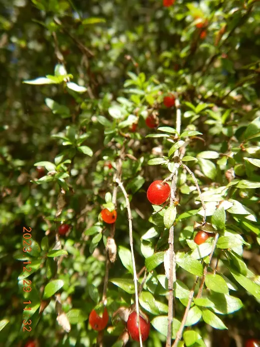

Native currant
Native currant is a wild fruit you can forage from December to March in Temperate south-east and Tasmania. Prickly, wiry shrub of cool wet forests with tiny leaves in pairs and small, glossy red berries.

When is native currant in season in Australia?
Native currant is usually in season December to March. Timing shifts with weather, latitude and altitude.
Where does native currant grow in Australia?
Native currant grows in Australian Capital Territory, New South Wales, South Australia, Tasmania, Victoria. Regions: Temperate south-east, Tasmania.
How do you recognise native currant?
Prickly, wiry shrub of cool wet forests with tiny leaves in pairs and small, glossy red berries.
How do you harvest native currant?
Pick only fully ripe fruit that comes away easily, into a shallow container so it doesn't crush. Leave plenty on the plant for birds and wildlife.
How do you eat native currant?
Sweet-tart berries raw or in jams.
How do you store native currant?
Freeze.
What is native currant good for?
Vitamin C.